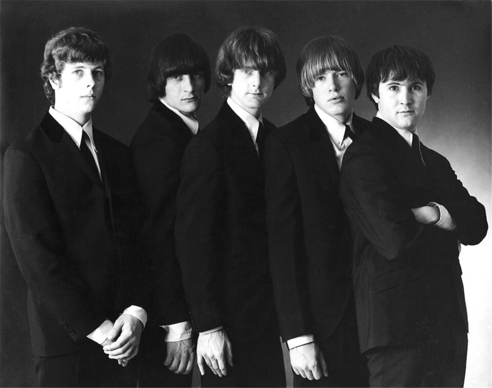

Folk rock music began the moment a folk singer plugged in an electric guitar.
That's exactly what happened on July 25, 1965, when Bob Dylan went electric at the Newport Folk Festival.
By then The Byrds had already sent his "Mr. Tambourine Man" to number one.
Jangling twelve-string guitars and tight harmonies carried it there.
Together those two moments launched one of the decade's most influential, most political sounds.

Table of Contents
- The Term Is Born
- Dylan Plugs In at Newport
- The Voices That Built Folk Rock
- The Wider Wave, and British Folk Rock
- The Long Reach
- FAQ
The Term Is Born: How Folk Rock Music Got Its Name
The phrase folk rock first showed up in the U.S. music press in June 1965.
Billboard writer Eliot Tiegel used it on June 12 to describe a new Los Angeles band called The Byrds.
The Byrds had started out playing straight folk music, then borrowed Beatles-style electric instrumentation to back it.
Their choice of song is what made the moment stick.
Roger McGuinn arranged Bob Dylan's "Mr. Tambourine Man" around a chiming twelve-string Rickenbacker guitar and close vocal harmonies.
Released in April 1965, the single reached number one on the Billboard Hot 100.
It also topped the UK Singles Chart within about three months.
The Byrds' debut album, also titled Mr. Tambourine Man, followed that same June.
"Turn! Turn! Turn!": A Second Number One
The Byrds weren't a one-song story.
Later that year they scored a second number one.
Pete Seeger had written the lyrics, adapting them almost word for word from the Book of Ecclesiastes.
Two chart-topping singles in a single year proved the jangly, folk-rooted sound wasn't a fluke.
Dylan Plugs In at Newport
Bob Dylan had already been moving toward rock before Newport.
His March 1965 album, Bringing It All Back Home, split its two sides.
One side was full-band electric, the other stayed acoustic.
It reached number six on the Billboard albums chart and number one in the UK.
Then came "Like a Rolling Stone," a six-minute single released July 20, 1965.
It climbed into the Top 5 on both sides of the Atlantic despite its unusual length.
Booing at Newport
Five days after that single came out, Dylan walked onto the Newport Folk Festival stage.
His backing band was drawn largely from the Paul Butterfield Blues Band.
Parts of the folk-purist crowd jeered and booed.
Accounts differ on exactly why.
Some blame the volume or a muddy sound mix.
Others call it betrayal, from a movement that had claimed Dylan as its voice.
Whatever the cause, the moment is remembered as a pivotal collision.
Folk's acoustic tradition met rock's electric future head-on.
Dylan pushed further still with Highway 61 Revisited later that year.
Blonde on Blonde followed in 1966, cementing folk rock music as more than a passing fad.
The Voices That Built Folk Rock
Dylan and the Byrds didn't invent the folk revival, they electrified it.
A wider circle of songwriters carried that same literate, socially aware spirit through the rest of the decade.
From the Folk Revival
Joan Baez was already a fixture on the folk festival circuit before Dylan's plugged-in set.
She was known for a pure, unadorned voice and close ties to the protest movement.
Peter, Paul and Mary helped push Dylan into the mainstream themselves.
Their 1963 cover of "Blowin' in the Wind" became a Top 10 hit.
That same year, Dylan's own version reached a far smaller audience.
They also carried early hits like "If I Had a Hammer" and "Puff, the Magic Dragon" onto pop radio.
The New Wave of Songwriters
Simon & Garfunkel found their breakthrough almost by accident.
Producer Tom Wilson overdubbed electric guitar, bass, and drums onto the track.
It was their acoustic 1964 recording of "The Sound of Silence," done without the duo's knowledge.
The remixed single climbed to number one on the Billboard Hot 100 in January 1966.
Donovan brought a gentler, more whimsical version on songs like "Catch the Wind" and "Universal Soldier."
The Mamas & the Papas stacked four-part harmony over a full rock arrangement on "California Dreamin'" and "Monday, Monday."
Leonard Cohen arrived slightly later.
He had published poetry for years before turning to music.
His 1967 debut album introduced "Suzanne" and "Hey, That's No Way to Say Goodbye."
The Wider Wave, and British Folk Rock
The sound spread fast once the Byrds and Dylan proved it could top the charts.
The Lovin' Spoonful, Jefferson Airplane, The Turtles, Barry McGuire, and Love all picked up pieces of the style.
Most did it within a year or two.
Even acts that came before the term existed got pulled into the story in hindsight.
The Animals had already taken the traditional folk song "House of the Rising Sun" electric in August 1964.
It shot to number one and sold more than a million copies within five weeks.
Britain's Own Answer
By the late 1960s, British bands built their own version out of older, deeper folk material.
Fairport Convention and Pentangle wove traditional English and Celtic folk songs into rock arrangements.
The result came to be called British folk rock.
Some of it grew directly out of the same instrument that started the whole genre.
The electric twelve-string guitar, popularized in Britain by The Searchers, gave folk rock music its ringing, chiming signature.
George Harrison used the same approach on Beatles recordings throughout the mid-1960s.
The Long Reach: What Folk Rock Left Behind
Folk rock's commercial peak lasted only about two years, roughly 1965 through 1966.
Its influence ran much longer than that.
The genre's roots reached back to the labor movement folk songs of the 1930s.
Pete Seeger and Woody Guthrie carried that same protest spirit into the Vietnam War era.
Anti-war and anti-establishment songs became a defining thread of the genre's second half of the decade.
Folk rock music also proved that a rock band could carry serious, literate lyrics and still top the charts.
That lesson shaped singer-songwriters for decades afterward, long after the jangly Rickenbacker sound itself faded from the radio.
Few 1960s genres left listeners with as clear a throughline from coffeehouse folk clubs to arena rock stages.
Curious which 1960s genre actually fits your taste?
Try the What's Your 60s Sound? quiz, or test your knowledge with the 1960s Music Trivia tool.
FAQ: Folk Rock
What is folk rock music?
Folk rock music blends the acoustic, socially conscious songwriting of the folk revival with electric rock instruments.
Ringing twelve-string guitars, close vocal harmonies, and literate lyrics are its clearest signatures.
Who started folk rock music?
The Byrds are usually credited with starting it.
Billboard writer Eliot Tiegel used the term folk rock in print on June 12, 1965.
He used it to describe The Byrds' electric arrangement of Bob Dylan's "Mr. Tambourine Man."
Dylan's own move to electric instruments that same year cemented the sound.
Why did Bob Dylan going electric matter?
Dylan's electric set at the Newport Folk Festival on July 25, 1965, split the folk world in two.
Purists booed, but the set is now seen as the moment folk and rock fused for good.
What's the difference between folk rock and straight rock?
Folk rock kept the diatonic harmonies and storytelling lyrics of folk music.
It added electric guitars, bass, and drums, along with much of folk's protest politics.
Straight 1960s rock leaned harder on blues structure and dance rhythm.
Its lyrics stayed closer to romance than social commentary.
Which artists defined 1960s folk rock?
The Byrds, Bob Dylan, Simon & Garfunkel, and The Mamas & the Papas shaped the American sound.
So did Donovan, Leonard Cohen, Joan Baez, and Peter, Paul and Mary.
Fairport Convention and Pentangle led a related British folk rock movement by the end of the decade.
Every artist above left behind a catalog worth its own closer look.
Start with Bob Dylan or The Byrds for that jangly signature sound.
Try Simon & Garfunkel next for where the songwriting went.
Head back to the 1960smusic.net homepage to explore every other genre that shaped folk rock music's decade.